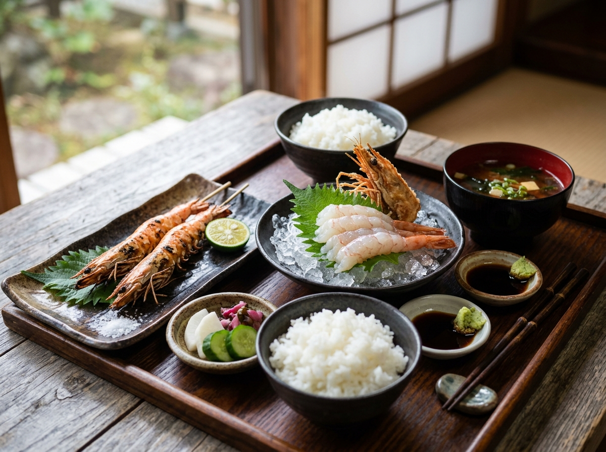

天草名物
活け車海老定食
¥3,200生簀から揚げたての車海老を、お造りと塩焼きの二通りで。頭は味噌汁に。
天草の海は、外海の東シナ海と内海の有明海・八代海に囲まれ、潮の違う三つの海の魚が揚がります。その日いちばんの魚を、いちばん近い場所で。
毎朝の競りに店主が立ち、目で見て選んだ魚だけを仕入れます。献立はその日の水揚げ次第。黒板のおすすめを覗いてください。
車海老とあわびは店内の生簀で泳がせ、注文を受けてから捌きます。甘みと食感は、活けでしか味わえないものです。
焼き物と塩焼きには、天草の海水を薪で炊いた地元の塩を。素材の味を引き立てる、角のないまろやかな塩気です。
「海が荒れた日は休みます。そのぶん、開いている日は胸を張れる魚だけを。」— 店主
季節ごとに、主役の魚が入れ替わります。
桜鯛、さより、ひじき。産卵前の真鯛がいちばん美しい季節。
赤うに、岩牡蠣、あわび。海士の漁が解禁され、店がいちばん賑わいます。
車海老、太刀魚、戻り鰹。車海老が大きく、甘みを増していきます。
寒ぶり、ひらめ、ワタリガニ。脂の乗った魚は、しゃぶしゃぶでも。
夜の部と、座敷のご利用は前日までのご予約をおすすめしています。
海が荒れて漁がない日は、臨時休業とさせていただきます。当日の営業はお電話でご確認ください。
活け車海老・うには数量限定です。確実にご用意したい場合は、ご予約時にお申し付けください。
天草空港から車で約15分 / 本渡バスターミナルから車で約20分
港の突堤の手前、藍色ののれんが目印です。